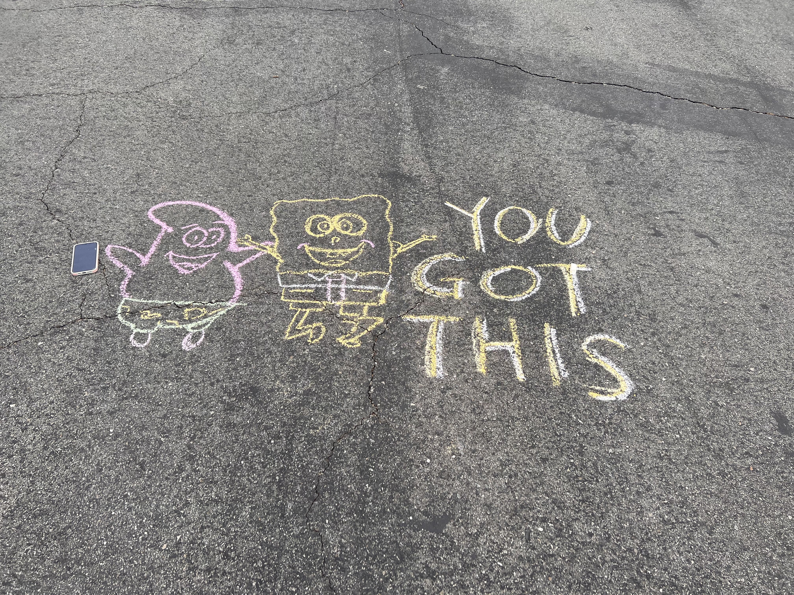

Menghan Wang
I am a sophomore at the University of California, Riverside. My major is currently undeclared because I am still thinking about what I want to study in the future. I am interested in education, and I hope to become a teacher one day. I think college is a good place for me to learn new things and understand what I really enjoy.
I came to the United States from China when I was in high school. At first, studying in a different country was not easy for me. I had to get used to speaking English, meeting new people, and learning in a different school system. One thing I remember is that I did not know how to use Canvas when I first started school. Sometimes I finished my homework but forgot to submit it online. After making these mistakes, I slowly learned how to check my assignments and manage my time better.
I enjoy reading novels and writing in my free time. I like novels because I can learn about different characters and their experiences. Writing is also something I enjoy, although sometimes I spend a lot of time thinking about how to start.
I usually prefer writing about things that I have experienced because it is easier for me to explain my thoughts.
Right now, I am taking different classes at UCR. One of them is CS8, where I am learning basic computer skills, including HTML and CSS. Before taking this class, I did not know much about making websites. At first, looking at all the code was confusing, but I am slowly learning how it works. This personal resume website is one of the projects I am working on. I am happy that I can make changes to a website and see the results myself.
I am also trying to become more organized with my schoolwork. Sometimes I have several assignments from different classes, so I need to check Canvas often and plan what to do first. I am still working on my time management, but I think I have improved compared to when I first started high school.
In the future, I hope to become a teacher and possibly work in China. I like the idea of helping students learn and understand new things. I know I still have a lot to learn before making a final decision about my career. For now, I want to do well in my classes, improve my English, and learn more about my interests.
Experience
University Student
• Currently studying at the University of California, Riverside.
• Learning new skills through college course and projects.
• Learning basic computer skills. HTML, and CSS.
Student
• Studied at a high school in the United States.
• Learned how to use Canvas and manage my schoolwork
Student Volunteer
• Helped teachers with school activities
• Helped give out free food to people
• Participated in different school volunteer activities
• Worked with other students during voluteer events.
Education
UC Riverside
High School
Portfolio
I am learning HTML and CSS in my CS8 class. This resume website is one of my projects.


